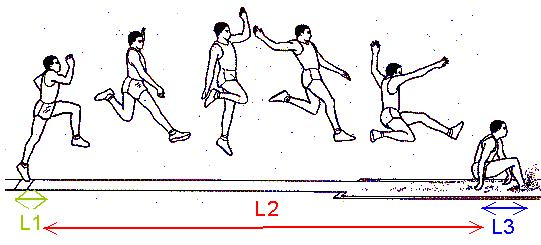

Existem dois tipos de saltos horizontais, comprimento e triplo salto. Em ambos os saltos existe corrida de balanço,
tábua de chamada e uma área onde o atleta cai (caixa de areia).
- - O salto em comprimento consiste em uma corrida de cerca de 30 metros ou mais,que também é conhecida
como zona de balanço,depois é seguido de um setp a partir da tábua até à caixa de areia.
O saltador, depois da impulsão, lança as pernas para a frente para aterrar o mais longe possível
na caixa de areia. Cada atleta tem três saltos após isso são escolhidos os oito melhores para mais três saltos, chamada a Final.
- - O triplo salto é uma combinação de três saltos sucessivos que terminam na caixa de areia. A prova é iniciada com uma corrida
de impulso e passa por 3 fases distintas: hop, setp e jump.
